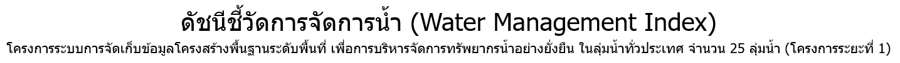
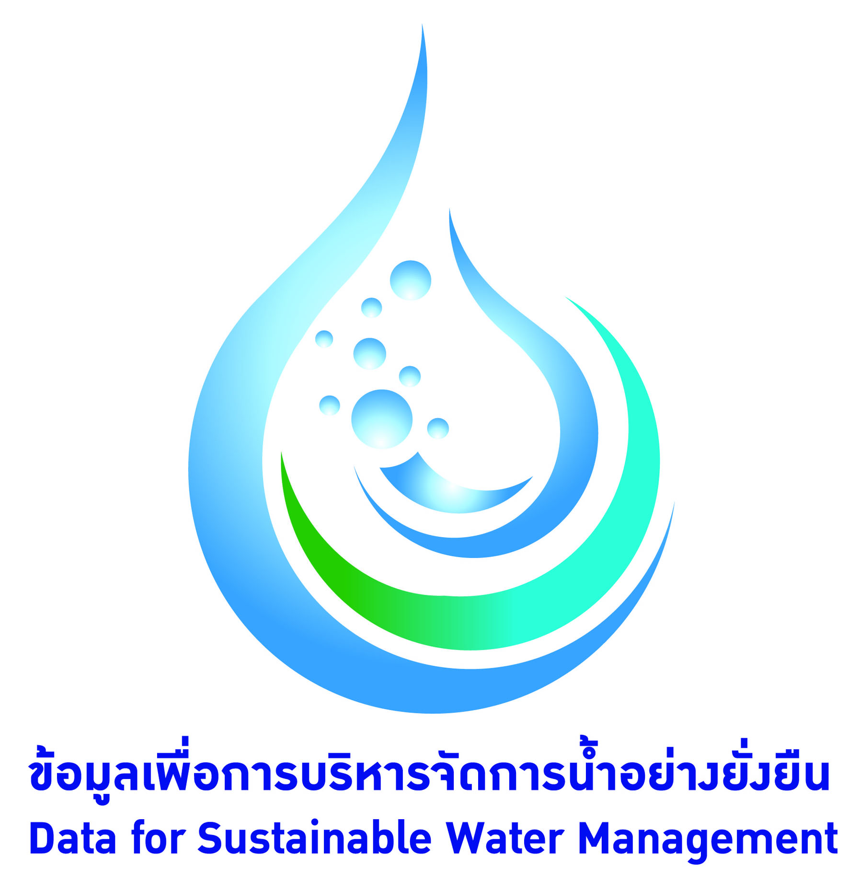
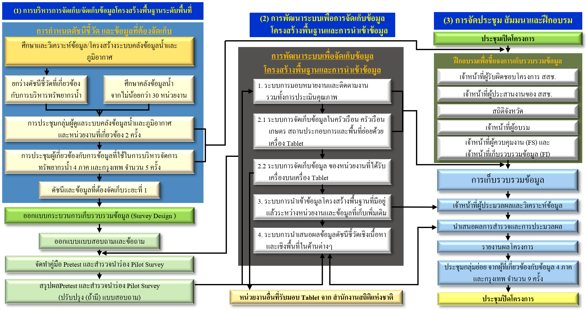

<ion-header>
  <ion-row>
    <ion-col col-2>
      
    </ion-col>
    <ion-col col-9>
      <div>
        
      </div>
      <!-- <label>
        <h3>
          โครงการระบบการจัดเก็บข้อมูลโครงสร้างพื้นฐานระดับพื้นที่
          เพื่อการบริหารจัดการทรัพยากรน้ำอย่างยั่งยืน <br>ในลุ่มน้ำทั่วประเทศ จำนวน 25 ลุ่มน้ำ (โครงการระยะที่ 1)
        </h3>
      </label> -->
      <nav text-left>
        <ul class="nav">
          <li><a href="https://water.surveydb.app/">หน้าหลัก</a></li>
          <li><a>ดัชนีชี้วัดการจัดการน้ำ</a>
            <ul>
              <li><a href="https://water.surveydb.app/#/water-index">รายพื้นที่การปกครอง</a></li>
              <li><a href="https://water.surveydb.app/#/water-wmi">รายลุ่มน้ำ</a></li>
              <li><a href="https://water.surveydb.app/#/wmi-menu">เปรียบเทียบเชิงพื้นที่/ลุ่มน้ำ</a></li>
            </ul>
          </li>
          <li><a href="https://water.surveydb.app/#/downloaddata">ข้อมูลดัชนีชี้วัดการจัดการน้ำ</a></li>
          <li><a>รายละเอียดโครงการฯ</a>
            <ul>
              <li><a href="https://water.surveydb.app/#/info-first">โครงการระบบการจัดเก็บข้อมูลฯ</a></li>
              <li><a href="https://water.surveydb.app/#/info-second">ขั้นตอนการจัดทำดัชนีชี้วัดการจัดการน้ำ</a></li>
              <li><a href="https://water.surveydb.app/#/info-third">วิธีการประเมินดัชนีชี้วัดการจัดการน้ำ</a></li>
              <li><a href="https://water.surveydb.app/#/infofourth">ประโยชน์ของดัชนีชี้วัดการจัดการน้ำ</a></li>
            </ul>
          </li>
        </ul>
      </nav>
    </ion-col>
    <ion-col col-1>
      
    </ion-col>
  </ion-row>
</ion-header>

<ion-content padding class="bgimg2">
  <h3 text-center>โครงการระบบการจัดเก็บข้อมูลฯ</h3>
  <div>
    <label class="fontL">
      &nbsp;&nbsp;&nbsp;&nbsp;&nbsp;&nbsp;&nbsp;สำนักงานสถิติแห่งชาติ (สสช.) เป็นหน่วยงานของรัฐที่ดำเนินการเกี่ยวกับสถิติตามหลักวิชาการ
      จัดทำสำมะโนหรือการสำรวจตัวอย่าง และให้บริการสถิติแก่หน่วยงานต่างๆ
      ปัจจุบันข้อมูลพื้นฐานทางสังคมและเศรษฐกิจที่มีความครบถ้วน ถูกต้อง แม่นยำ ไม่ซ้ำซ้อน และตรงความต้องการของผู้ใช้
      รวมทั้งข้อมูลในระดับพื้นที่ย่อย เป็นสิ่งจำเป็นในการวางแผนและพัฒนาประเทศ
      โดยเฉพาะในการบริหารจัดการทรัพยากรน้ำอย่างยั่งยืน ดังนั้นการศึกษาและสำรวจข้อมูลการใช้น้ำ
      รวมทั้งการบริหารจัดการในเชิงบูรณาการ ต้องมีการจัดการข้อมูลให้เป็นไปในทิศทางเดียวกัน
      และลดความซ้ำซ้อนในการจัดเก็บข้อมูล เพื่อให้ประเทศมีสถิติที่สำคัญสำหรับใช้ในการวิเคราะห์
      และจัดลำดับความั่นคงของทรัพยากรน้ำ
      และนำไปสู่การจัดทำนโยบายและแผนในการกำหนดทิศทางการพัฒนาประเทศและการบริหารจัดการน้ำอย่างยั่งยืนในอนาคต
      สสช. จึงได้เสนอโครงการระบบการจัดเก็บข้อมูลโครงสร้างพื้นฐานระดับพื้นที่เพื่อการบริหารจัดการทรัพยากรน้ำอย่างยั่งยืน
      ในลุ่มน้ำทั่วประเทศ จำนวน 25 ลุ่มน้ำ (โครงการระยะที่ 1)
      และได้มอบหมายให้มหาวิทยาลัยขอนแก่นเป็นที่ปรึกษาในการดำเนินงานโครงการฯ
    </label>
  </div>

  <h2>วัตถุประสงค์ของโครงการ</h2>
  <div>
    <ion-icon name="ios-water"></ion-icon>
    <label class="fontL">เพื่อสร้างระบบการจัดเก็บข้อมูลโครงสร้างพื้นฐานด้านเศรษฐกิจและสังคมในระดับพื้นที่ย่อย
      เพื่อการบริหารจัดการทรัพยากรน้ำในลุ่มน้ำต่างๆ ทั้งพื้นที่ในเขตชลประทาน พื้นที่นอกเขตชลประทาน
      และพื้นที่ในเขตเมืองอย่างต่อเนื่องและยั่งยืน
    </label>
  </div>
  <div>
    <ion-icon name="ios-water"></ion-icon>
    <label class="fontL">เพื่อการนำเข้าข้อมูลโครงสร้างพื้นฐานที่มีอยู่แล้วระหว่างหน่วยงาน
      และข้อมูลโครงสร้างพื้นฐานที่ดำเนินการจัดเก็บใหม่เพิ่มเติมในระดับพื้นที่ย่อย
      ให้พร้อมเชื่อมโยงเข้าสู่คลังข้อมูลน้ำและภูมิอากาศแห่งชาติ
    </label>
  </div>
  <div>
    <ion-icon name="ios-water"></ion-icon>
    <label class="fontL">เพื่อสร้างดัชนีชี้วัดเชิงระบบและเชิงพื้นที่ในด้านต่างๆ ที่สนับสนุนการบริหารจัดการทรัพยากรน้ำ
    </label>
  </div>
  <div>
    <ion-icon name="ios-water"></ion-icon>
    <label class="fontL">เพื่อให้หน่วยงานด้านการวางแผนกำหนดยุทธศาสตร์
      และหน่วยงานด้านการดูแลงบประมาณมีข้อมูลสนับสนุนการดำเนินการ
    </label>
  </div>

  <h2>เป้าหมายของโครงการ</h2>
  <div>
    <ion-icon name="ios-water-outline"></ion-icon>
    <label class="fontL">บูรณาการข้อมูลของหน่วยงานภาครัฐที่เกี่ยวข้องทั้งที่มีอยู่ และดำเนินการจัดเก็บข้อมูลที่ขาดหาย 
    </label>
  </div>
  <div>
    <ion-icon name="ios-water-outline"></ion-icon>
    <label class="fontL">สนับสนุนและเชื่อมโยงกับคลังข้อมูลน้ำและภูมิอากาศแห่งชาติ
    </label>
  </div>
  <div>
    <ion-icon name="ios-water-outline"></ion-icon>
    <label class="fontL">มีเครื่องมือที่มีคุณภาพประกอบการตัดสินใจด้านนโยบายและการจัดการน้ำ
    </label>
  </div>

  <div text-center>
  <h2 >ภาพรวมการดำเนินงานของโครงการ</h2>
    
  </div>
</ion-content>
<ion-footer>
  <ion-toolbar>
    <ion-label text-end class="fontL"> หมายเหตุ ขนาดความละเอียดขั้นต่ำของหน้าจอที่เหมาะกับการแสดงผลเท่ากับ 1280 × 1024
    </ion-label>
  </ion-toolbar>
</ion-footer>